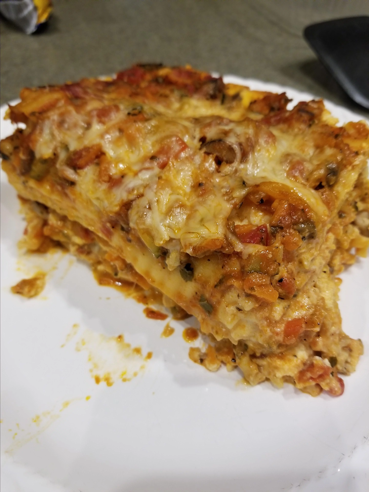

Lasagna

"This hearty, vegetable lasagna is the only lasagna my husband will eat. We love it!!! Hope you all enjoy as much as we do."
Ingredients
- 1 (16 ounce) package lasagna noodles
- 1 pound fresh mushrooms, sliced
- ¾ cup chopped green bell pepper
- ¾ cup chopped onion
- 3 cloves garlic, minced
- 2 tablespoons vegetable oil
- 2 (26 ounce) jars pasta sauce
- 1 teaspoon dried basil
- 1 (15 ounce) container part-skim ricotta cheese
- 4 cups shredded mozzarella cheese
- 2 eggs
- ½ cup grated Parmesan cheese
Steps
- Cook the lasagna noodles in a large pot of boiling water for 10 minutes, or until al dente. Rinse with cold water, and drain.
- In a large saucepan, cook and stir mushrooms, green peppers, onion, and garlic in oil. Stir in pasta sauce and basil; bring to a boil. Reduce heat, and simmer 15 minutes.
- Mix together ricotta, 2 cups mozzarella cheese, and eggs.
- Preheat oven to 350 degrees F (175 degrees C). Spread 1 cup tomato sauce into the bottom of a greased 9x13 inch baking dish. Layer 1/2 each, lasagna noodles, ricotta mix, sauce, and Parmesan cheese. Repeat layering, and top with remaining 2 cups mozzarella cheese.
- Bake, uncovered, for 40 minutes. Let stand 15 minutes before serving.
Per Serving: 463 calories; protein 23.2g; carbohydrates 49.6g; fat 19.5g; cholesterol 76.9mg; sodium 843.2mg.
Return to main